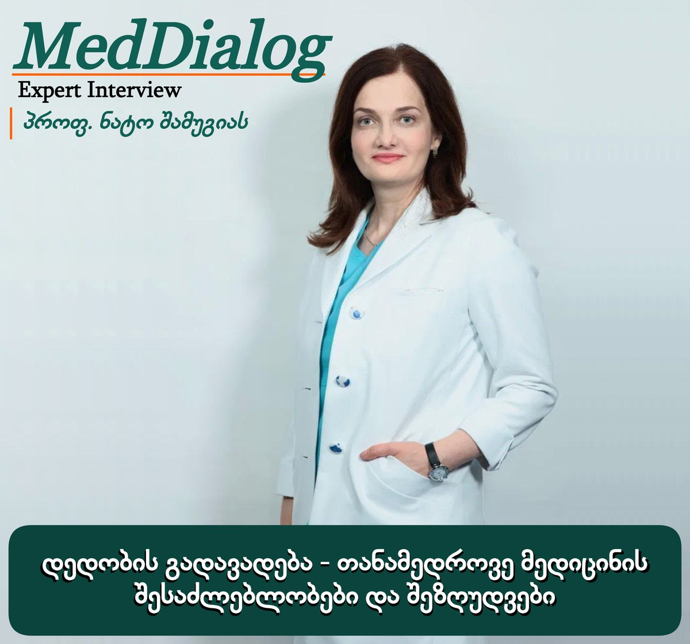

ექსპერტის ინტერვიუ
დედობის გადავადება — თანამედროვე მედიცინის შესაძლებლობები და შეზღუდვები

თანამედროვე მსოფლიოში ქალები სულ უფრო გვიან ასაკში ხდებიან დედები. განათლება, პროფესიული განვითარება, პირადი გეგმები და სოციალური თუ ეკონომიკური გარემოებები ხშირად განაპირობებს დედობის ასაკის გადავადებას.
თუმცა, ამ სოციალურ ცვლილებებთან ერთად მნიშვნელოვანია ქალის რეპროდუქციული ბიოლოგიის გათვალისწინებაც, რადგან ქალის დაორსულების უნარი ასაკთან მჭიდროდ არის დაკავშირებული. ასაკის მატებასთან ერთად მცირდება საკვერცხეებში კვერცხუჯრედების მარაგი და ქვეითდება მათი ხარისხი.
სწორედ ამიტომ რეპროდუქციული მედიცინის ამოცანა მხოლოდ უშვილობის მკურნალობით არ შემოიფარგლება, არანაკლებ მნიშვნელოვანია ქალისთვის დროული და სანდო ინფორმაციის მიწოდება ასაკთან დაკავშირებული ცვლილებების, თანამედროვე მედიცინის შესაძლებლობებისა და შეზღუდვების შესახებ. ინფორმირებულობა ქალს ეხმარება, საკუთარი სურვილების, ჯანმრთელობისა და ცხოვრებისეული გარემოებების გათვალისწინებით დაგეგმოს რეპროდუქციული მომავალი.
ასაკისა და ფერტილობის კავშირზე, ორსულობის გადავადებისას გასათვალისწინებელ საკითხებსა და კვერცხუჯრედების გაყინვისა და შენახვის შესაძლებლობებზე დღეს ჟურნალ „ექიმთან დიალოგის“ სტუმარს — მეან-გინეკოლოგს, რეპროდუქტოლოგს, ინ ვიტრო განაყოფიერების სპეციალისტს, მედიცინის აკადემიურ დოქტორსა და პროფესორს ნატო შამუგიას ვესაუბრებით.
ქალბატონო ნატო, როგორ იცვლება ქალის ფერტილობა, ანუ დაორსულების შესაძლებლობა, ასაკთან ერთად? რომელ ასაკობრივ ეტაპებზეა ეს ცვლილებები განსაკუთრებით გამოხატული და რამდენად ინდივიდუალურია ეს პროცესი?
ჯანმოს (WHO) მონაცემებით, ქალის რეპროდუქციული პერიოდი მენარქედან, ანუ პირველი მენსტრუაციიდან (საშუალოდ 13–14 წლის ასაკიდან), დაახლოებით 49 წლამდე გრძელდება და ამ პერიოდში ორსულობის დადგომა შესაძლებელია. თუმცა არსებობს საკვანძო ეტაპები ქალის ასაკში: 35 წელი — ზღვარი, რომლისთვისაც ქალმა სასურველია მოასწროს რეპროდუქციული გეგმების რეალიზება, ვინაიდან ამ ასაკიდან იზრდება კვერცხუჯრედებში ქრომოსომული დარღვევების ალბათობა; 37 წელი — როდესაც ოვარიული რეზერვის შემცირების ტემპი ორმაგდება; და 45 წელი — როდესაც რეპროდუქციული პოტენციალის მკვეთრ ვარდნაზე ვსაუბრობთ.
რას ნიშნავს „საკვერცხის რეზერვი“ და რა კავშირი აქვს მას დაორსულების შესაძლებლობასთან? ნიშნავს თუ არა კვერცხუჯრედების შემცირებული მარაგი, რომ ბუნებრივი გზით დაორსულება შეუძლებელია და, პირიქით, კარგი საკვერცხის რეზერვი ნიშნავს თუ არა აუცილებლად კარგ რეპროდუქციულ პოტენციალს?
საკვერცხის, ანუ ოვარიული რეზერვი, ასახავს საკვერცხეებში დარჩენილი კვერცხუჯრედების მარაგს, რომელიც ასაკის მატებასთან ერთად თანდათან მცირდება. ოვარიულ მარაგს პირდაპირი კავშირი აქვს შვილოსნობასთან, ვინაიდან ის განსაზღვრავს იმ კვერცხუჯრედების რაოდენობას, რომლებსაც შეუძლიათ შთამომავლობის მოცემა. შემცირებული რეზერვის პირობებშიც კი ორსულობის დადგომა შესაძლებელია, თუმცა შედარებით დაბალი ალბათობით. ოვარიულ რეზერვზე საუბარი განსაკუთრებით მნიშვნელოვანია დამხმარე რეპროდუქციული ტექნოლოგიების (ART) პროგრამებში 35+ ასაკის ქალებში. რაც უფრო დაბალია საკვერცხეების რეზერვი, მით ნაკლებია ორსულობის დადგომის შანსი, ხოლო 35 წლიდან მცირე რაოდენობას ემატება კვერცხუჯრედის ხარისხის დაქვეითებაც, რაც გამოხატულ ქრომოსომულ ცვლილებებს უკავშირდება.
როდესაც კვერცხუჯრედის „ხარისხზე“ ვსაუბრობთ, კონკრეტულად რას ვგულისხმობთ? როგორ უკავშირდება ასაკი ქრომოსომული დარღვევების ალბათობას და როგორ შეიძლება აისახოს ეს განაყოფიერებაზე, ემბრიონის განვითარებაზე და ორსულობის გამოსავალზე?
„კვერცხუჯრედის ხარისხი“ გულისხმობს მის უნარს, წარმატებით მომწიფდეს, განაყოფიერდეს, სწორად გაიყოს და განვითარდეს ჯანმრთელ ემბრიონად, რომელსაც ექნება საშვილოსნოში შემდგომი იმპლანტაციისა და ნორმალური ორსულობის განვითარების შესაძლებლობა. კვერცხუჯრედის ხარისხი ასახავს ოოციტის სიცოცხლისუნარიანობასა და გენეტიკურ ჯანმრთელობას.
კვერცხუჯრედის ხარისხს განსაზღვრავს ასაკი, ცხოვრების წესი და გარემო ფაქტორები: თამბაქოს მოხმარება (ოოციტების დაზიანების ერთ-ერთი უძლიერესი ფაქტორი), ალკოჰოლი, ქრონიკული სტრესი, გარემოს ტოქსინები; ასევე მეტაბოლური და ენდოკრინული დარღვევები: სიმსუქნე, ინსულინრეზისტენტობა, შაქრიანი დიაბეტი, მძიმე ენდომეტრიოზი.
კვერცხუჯრედის ხარისხი პირდაპირ მოქმედებს ემბრიონში მიმდინარე პროცესებზე — განაყოფიერების სიზუსტეზე, უჯრედების ენერგეტიკულ პოტენციალსა და უჯრედულ მეტაბოლიზმზე.
როგორია ქალის ფერტილობის შეფასების თანამედროვე მიდგომები და რა მნიშვნელობა აქვს ამ შეფასებას რეპროდუქციული მომავლის დაგეგმვისას?
კონსულტაციაზე პაციენტებს ყოველთვის ვეუბნები ასეთ ფრაზას: „თქვენს რეპროდუქციულ პროგნოზს ძალიან ბევრი ფაქტორი განსაზღვრავს, რომელთა შორისაც ორი ყველაზე მთავარია — კვერცხუჯრედების ხარისხი და რაოდენობა. როგორც ზემოთ აღვნიშნე, ხარისხს განსაზღვრავს ქალის ასაკი, ცხოვრების წესი და ჯანმრთელობა, ხოლო რაოდენობას — ოვარიული რეზერვი. საკვერცხეების რეზერვს ვადგენთ ძირითადი მარკერების საშუალებით — ესენია საკვერცხეში არსებული ფოლიკულების რაოდენობა, რომელსაც ექიმი ულტრაბგერითი გამოკვლევით (ექოსკოპიით) აფასებს, და ჰორმონების დონე: AMH, FSH და LH. ფაქტობრივად, პირველივე ვიზიტზევეა შესაძლებელი ორსულობის დადგომის პოტენციალისა და პროგნოზის შეფასება. სწორედ ეს ორი ფაქტორია გადამწყვეტი ორსულობის დადგომის პროგნოზირებისას. ემბრიონში ქრომოსომული დარღვევების სიხშირე 35 წლამდე შეადგენს 30%-ს, 35–40 წლის ასაკში — 45–50%-ს, 40–43 წლის ასაკში — 70%-ს, ხოლო >43 წლის ასაკში 70–80%-ს აჭარბებს. სწორედ ეს ფაქტორები განსაზღვრავს ორსულობის დადგომის, ორსულობის ვადამდე მიტანისა და გენეტიკურად ჯანმრთელი ბავშვის დაბადების პროგნოზს.“
თუ ორსულობა არ დგება, როდის უნდა მიმართოს წყვილმა სპეციალისტს? როგორ იცვლება რეკომენდებული ვადა ქალის ასაკის მიხედვით და რა გარემოებების არსებობისას არის საჭირო უფრო ადრეული შეფასება?
ამ კითხვაზე პასუხისას კვლავ ასაკს დავუბრუნდები: 35 წლამდე ასაკში წყვილმა ექიმს უნდა მიმართოს, თუ რეგულარული სქესობრივი ცხოვრებისას, კონტრაცეფციის გარეშე, ორსულობა 1 წლის განმავლობაში არ დგება; ხოლო 35+ ასაკში — ორსულობის არარსებობის 6 თვის შემდეგ. აბსოლუტური უნაყოფობის ცნობილი მიზეზების არსებობისას — საშვილოსნოს, საშვილოსნოს მილების, საკვერცხეების ან სპერმატოზოიდების არარსებობისას — მიმართვა უნდა მოხდეს დაუყოვნებლივ.
საერთაშორისო მონაცემები გვიჩვენებს, რომ ბოლო ათწლეულების განმავლობაში ქალები დედობას სულ უფრო გვიან ასაკში გეგმავენ. რა მონაცემები გვაქვს საქართველოში პირველი შვილის გაჩენის საშუალო ასაკის შესახებ? შეინიშნება თუ არა დედობის ასაკის გადავადების ტენდენცია და რამდენად შეესაბამება ქართული მონაცემები საერთაშორისო სურათს?
დიახ, სრულიად გეთანხმებით. რეპროდუქტოლოგთან მიმართვისას ქალების საშუალო ასაკი 38 წელს შეადგენს და ეს ტენდენცია მთელ მსოფლიოში ნარჩუნდება, მათ შორის საქართველოშიც. ძალიან მიხარია, რომ ბოლო წლებში სულ უფრო ხშირად მოგვმართავენ ახალგაზრდა პაციენტები საკუთარი რეპროდუქციული პოტენციალის შესანარჩუნებლად (Fertility Preservation) — ანუ როცა ოჯახის შესაქმნელად მზად არ არიან ან არ ჰყავთ პარტნიორი, ისინი ინფორმირებულნი არიან გვიანი დედობის შესაძლო შედეგების შესახებ და ქმნიან საკუთარი უჯრედების ბანკს ჯანსაღი შთამომავლობის დაბადების შესაძლებლობის შესანარჩუნებლად. რა თქმა უნდა, საქართველოში ეს შედარებით რთულია, ჩვენი მოქალაქეების მენტალიტეტისა და ოჯახის კულტის გათვალისწინებით, თუმცა ტენდენცია სწორია და იმედი მაქვს, თითოეულ ახალგაზრდა ქალს ექნება უფლება, თავად გადაწყვიტოს საკუთარი მომავალი.
თუ ქალი ამ ეტაპზე ორსულობას არ გეგმავს, თუმცა მომავალში სურს შვილის გაჩენა, რა შესაძლებლობებს სთავაზობს მას თანამედროვე რეპროდუქციული მედიცინა ფერტილობის შესანარჩუნებლად? რამდენად შეუძლია თანამედროვე მკურნალობის მეთოდებს ასაკთან დაკავშირებული სირთულეების დაძლევა და რა შეზღუდვები უნდა გაითვალისწინოს ქალმა დედობის ასაკის გადავადებისას?
თანამედროვე რეპროდუქტოლოგია იმდენად სწრაფად ვითარდება, რომ მშობლობის დაგეგმვა სხვადასხვა გზით არის შესაძლებელი — ესენია კვერცხუჯრედების, ემბრიონებისა და სპერმატოზოიდების კრიოკონსერვაცია (გაყინვა). ჩვენ ბევრს ვსაუბრობთ ქალებზე, თუმცა მამაკაცებისთვისაც ასაკი საკვანძო როლს ასრულებს ჯანსაღი შთამომავლობის დაბადებაში. მამაკაცებისთვის ასეთი ზღვარი 40 წლიდან იწყება — ეს ის ეტაპია, როდესაც მამაკაცმაც სერიოზულად უნდა იფიქროს ამ საკითხზე. კვერცხუჯრედების კრიოკონსერვაციისთვის საუკეთესო ასაკი 35 წლამდეა; ამ ასაკის შემდეგ, რაც უფრო იმატებს წლები, მით მეტი რაოდენობის უჯრედის გაყინვა ხდება საჭირო. 35 წლამდე ასაკში მომავალში 1 გენეტიკურად ჯანსაღი ემბრიონის მისაღებად საჭიროა 6–8 კვერცხუჯრედის კრიოკონსერვაცია, მაშინ როდესაც 40 წლის ასაკში ამისთვის 20–25 ოოციტია საჭირო, რაც ყოველთვის რეალისტური არ არის.
ასაკისა და ფერტილობის კავშირზე საუბრისას რა მნიშვნელობა აქვს მამაკაცის ასაკს? როგორ იცვლება ასაკთან ერთად მამაკაცის რეპროდუქციული შესაძლებლობები და რა გავლენა შეიძლება ჰქონდეს მამის ასაკს დაორსულების შანსზე, ორსულობის მიმდინარეობასა და მომავალი ბავშვის ჯანმრთელობაზე?
კარგი შეკითხვა დასვით და მეც ხშირად აღვნიშნავ ხოლმე ამას. მამაკაცის ასაკსაც ასევე დიდი მნიშვნელობა აქვს: 40 წლიდან მამაკაცის სასქესო უჯრედებში — სპერმატოზოიდებში — იწყება ქრომოსომული ცვლილებები, რომლებიც გავლენას ახდენს ემბრიონის ფორმირების ხარისხზე, ორსულობის მიმდინარეობაზე (ვადამდე მიტანაზე) და ჯანსაღი შთამომავლობის დაბადებაზე.
რა ეტაპებს მოიცავს კვერცხუჯრედების გაყინვის პროცესი, რამდენ დროს საჭიროებს და რა შესაძლო რისკებისა თუ გვერდითი მოვლენების შესახებ უნდა იცოდეს ქალმა?
მე ამ პროცესს რამდენიმე ეტაპად დავყოფდი:
- ქალის გამოკვლევა (Check-up) ART პროგრამის დაწყებამდე — ზოგადკლინიკური ანალიზები, მცირე მენჯის ღრუს ორგანოების ულტრაბგერითი გამოკვლევა (ექოსკოპია) და პროფილური სპეციალისტების კონსულტაციები. ჩვენს კლინიკაში შეიქმნა სპეციალური პროგრამა, რომლის მეშვეობითაც მთელი ამ ჩამონათვალის შესრულება 1 დღეშია შესაძლებელი.
- საკვერცხეების ჰორმონალური სტიმულაციის პროცესი — ინიშნება ჰორმონალური პრეპარატები, რომლებიც ხელს უწყობს რამდენიმე ფოლიკულის ერთდროულ ზრდას (მათი რაოდენობა ინდივიდუალურია და დამოკიდებულია ოვარიულ რეზერვზე). ჰორმონალური სტიმულაციის ხანგრძლივობა 8–12 დღეს შეადგენს; ამ პერიოდში პაციენტი აგრძელებს ჩვეულ, მისთვის დამახასიათებელ ცხოვრების წესს და მხოლოდ 2–3-ჯერ მოდის ექიმთან ფოლიკულების ზრდის ულტრაბგერით მონიტორინგზე პრეპარატების დოზის კორექციისა და ოოციტების ასპირაციის ზუსტი თარიღის შერჩევისთვის.
- კვერცხუჯრედების ასპირაცია (პუნქცია) — ფოლიკულების სასურველი დიამეტრის მიღწევისას ინიშნება კვერცხუჯრედების შეგროვების (ასპირაციის) დღე, რომელიც ტარდება ხანმოკლე ვენური სედაციით (ანესთეზიით) და გრძელდება 15–20 წუთი. პროცედურიდან 1 საათში პაციენტი უბრუნდება ცხოვრების ჩვეულ რიტმს და მიდის სახლში. კვერცხუჯრედების კრიოკონსერვაცია ხდება იმავე დღეს.
და ბოლოს, რას ურჩევდით ქალს, რომელიც დღეს ორსულობას არ გეგმავს, თუმცა მომავალში სურს შვილის გაჩენა? რა პრაქტიკული ნაბიჯებით დაიწყოს საკუთარი რეპროდუქციული მომავლის დაგეგმვა, რომ გადაწყვეტილება სანდო ინფორმაციაზე დაყრდნობით, პირადი სურვილებისა და ცხოვრებისეული გარემოებების გათვალისწინებით მიიღოს?
ჩემი რჩევაა — დედობაზე ფიქრი უკვე 25–30 წლის ასაკში დაიწყოთ, ხოლო 31–35 წლის ინტერვალში საბოლოოდ გადაწყვიტოთ ეს საკითხი და მოახდინოთ დედობის რეალიზება. თუ 31–35 წლის ასაკში ეს ვერ ხერხდება, 35 წლამდე აუცილებლად იზრუნეთ საკუთარი ოოციტების შენარჩუნებაზე — მოახდინეთ 10–20 ოოციტის კრიოკონსერვაცია. კრიოკონსერვირებული ოოციტები თქვენი მომავლის გარანტია — ეს არის საუკეთესო „სადაზღვევო პოლისი“ მშვიდი და უზრუნველყოფილი მომავლისთვის!
სამწუხაროდ, მედიცინის განვითარების მაღალი ტემპის მიუხედავად, კაცობრიობას ჯერ არ უსწავლია უჯრედებში ასაკობრივი ცვლილებების კორექტირება — ჩვენ შეგვიძლია მხოლოდ სელექცია, ანუ ქრომოსომების ნორმალური ნაკრების მქონე ემბრიონების შერჩევა დამხმარე რეპროდუქციულ ტექნოლოგიებში (ART) PGT-ტესტირების გამოყენებით. თუმცა ყოველთვის ვერ ხერხდება იმ ერთი, ჯანსაღი ემბრიონის მიღებაც კი, რომელიც ოჯახს ბედნიერ მომავალს აჩუქებს.
სტატია ატარებს საინფორმაციო ხასიათს და არ ცვლის ექიმთან კონსულტაციას.
ყველა სტატია